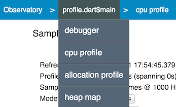
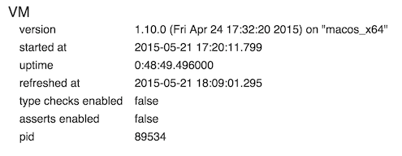
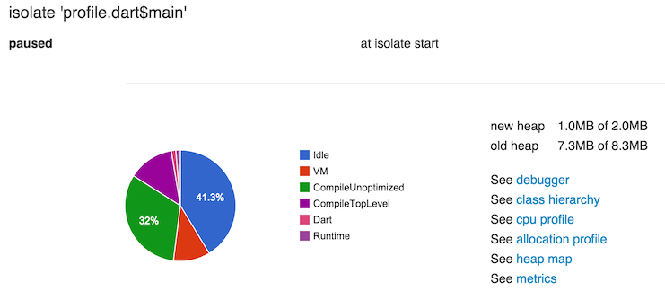

Getting Started with Observatory
https://www.dartlang.org/tools/observatory/get-started.html の訳
[Contents]
- Get Observatory
- Start Observatory
- Standalone apps from the command line
- Web apps
- Observatory UI
- VM screen
- What next?
ObservatoryはFreeでGETできます。
https://www.dartlang.org/downloads/ から取得できます。
issueやrequestは、 http://dartbug.com/new で受け付けています。
Get Observatory
Observatory は Dart SDK 中の toolsのひとつです。https://www.dartlang.org/downloads/ からダウンロードできます。
Dartでアプリケーションをつくる場合2つの方法があります。 ひとつは、standalone applications として動作させる方法です。もうひとつは、web
applications として動作させる方法です。 standalone appsの場合、 command line から Observatory を使う事ができます。
browser-based apps の場合、command line からDartium 上でアプリを起動させる事で、Observatory を利用できます。
つまり、どちらの場合でもObservatoryを利用する事ができます。
Start Observatory
standaloneか web appかによって、 Observatory 有効にする方法は異なります。 しかし、UIについてだいだい同じです。
Standalone apps from the command line
Observatoryを有効にするには、dartvm を起動する時にオプションを追加します。 例えば、
dart --observe <script>.dart
次に、お好みのブラウザーで http://localhost:8181 にアクセスしてください。Observatory UI が表示されます。
デフォルトでは、このサービスは同コンピュータからのみ許可されています。 この制限は、ssdhでport foward するなどして回避することもできます。
ssh -L8181:127.0.0.1:8181 user@targetmachine
LinuxやMacを使っている場合は、IGQUITメッセージを送る事で、この機能を後から有効にすることもできます。Observatory UI へのアドレスは、コンソール上(STDOUT)に表示されます。
$ ps ax | grep dart
<pid> pts/61 Sl+ 0:01 dart example.dart
$ kill -s SIGQUIT <pid>
Observatory listening on http://127.0.0.1:<port>
Web apps
Dartium上でアプリを起動してください。例えば、WebStormで実行する場合は、index.htmlとかを右クリックして、pop-up menuからRunをを選択します。
Dartiumの中で、 select View > Developer > JavaScript ConsoleとしてCosoleを立ち上げると、以下のように表示されます。
Observatory listening on http://127.0.0.1:56246
このアドレスから、Observatory UI にアクセスできます。
コマンドラインから起動する事ものできます。より詳細な情報は、 https://www.dartlang.org/tools/dart-vm/#observatory を参照してください
- Mac OS:
cd <path-to-demo>/sunflower/web <path-to-Dartium>/Chromium.app/Contents/MacOS/Chromium --DART_FLAGS="--steal_breakpoints --pause-isolates-on-start" sunflower.html (#)kyorohiroの環境では、--DART_FLAGS="--steal_breakpoints --pause-isolates-on-start --observe --enable-vm-service --pause-isolates-on-exit"としました。
Windows:
cd <path-to-demo>\sunflower\web <path-to-Dartium>\Chromium\Application\chromium.exe --DART_FLAGS="--steal_breakpoints --pause-isolates-on-start" sunflower.htmlLinux:
cd <path-to-demo>/sunflower/web <path-to-Dartium>/chromium-browser --DART_FLAGS="--steal_breakpoints --pause-isolates-on-start" sunflower.html
Observatory UI
Observatory は browser-based で動作します。
上部に青色のパーが表示さけます。その左に文字が表示されます。リフレッシュボタンが右にあります。リフレッシボタンを押すと情報が更新されます。
blue bar の中には、 breadcrumb trail がありす。これは、Observatory UI 上のどころいるかをしめしています。このItemをクリックすることができます。
このItem上にマウスカーソルを合わせると、drop-down menus が表示されます。 以下スクリーンショットのようになります。このスクリーンショットは、profile.dart$main 上にマウスカーソルを合わせたものです。 debugger, cpu profile, allocation profile, and heap map が表示されます。

breadcrumb bar を利用する事で、いつでも VM screen に戻る事ができます。
次のSectionでは、VM Screenについて説明します。Observatoryで利用可能Screendについては、Screens in Observatoryを参照してください。
VM screen
Observatoryに最初に接続した時、VM screenが表示されます。この時、この瞬間の情報がサンプリングされます。
例えば:

この情報は、Refresh button をクリックする事で更新されます。
vm screenn には 以下の情報が含まれます。
version
どのバージョンのVMなのか?どのアーキテクチャーのVMなのか?
started at
VMを起動した時のThe time stamp
uptime
VM動作している時間
refreshed at
最後にサンプリングした時間
type checks enabled
type errorsをチェックするかどうか
asserts enabled
assertion statements を評価するかどうか。
pid
process ID
以下は、isolatesの一覧です。

詳しくは User and VM Tags を参照してください。
さまざまなObservatory screen を持ちます。詳しは Screens in Observatory を参照してください.
isolateについては Isolateを参照してください.
What next?
Where you should go next depends on what questions you’d like to answer.